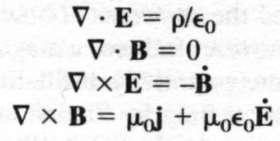
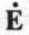
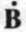
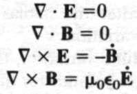

Entelektüel meraka neden prim verelim?
RONALD REAGAN
kampanya konuşması, 1980
Himayemizi bilim ve edebiyatın geliştirilmesinden daha fazla hak eden hiçbir şey yoktur.
Bilgi her ülke için halkın mutluluğunu getiren en kesin araçtır.
GEORGE WASHINGTON
Meclise hitap, Ocak 1790
Her yanımız basmakalıp modellerle dolu. Etnik gruplar, diğer ulusların yurttaşları ve dinleri, cinsiyetler ve cinsel tercihler, yılın çeşitli zamanlarında doğmuş insanlar (yıldız falı) ve meslekler basmakalıp modeller olarak algılanıyor. En cömert yaklaşımla, bu eğilimi bir tür entelektüel tembelliğe bağlayabiliriz: İnsanları bireysel artı ve eksilerine göre yargılamaktansa, onlar hakkındaki bir iki bilgi kırıntısına yöneliyor ve sonra da onları, önceden hazırlanmış az sayıdaki kutucuğa yerleştiriyoruz.
Böylelikle, birçok durumda büyük haksızlık etme pahasına, düşünme zahmetinden sıyrılıyoruz. Modelleyici de çok çeşitlilikteki insanla temas kurmaktan, insanlığın sayısız yüzüyle karşılaşmaktan korunmuş oluyor. Basmakalıp modelleme ortalama olarak geçerli olsaydı bile, birçok tekil durumda hata vermesi kaçınılmazdır: İnsan çeşitlilik bakımından çan eğrilerine karşı duruyor. Her türlü nitelik için ortalama bir değer söz konusu ve ortalamanın üzerinde, aşırı uçlarda yer alan insanların sayısı her zaman görece az.
Basmakalıp modellemenin kimi örnekleri değişkenleri kontrol etmemenin, işin içinde ne gibi diğer unsurlar olabileceğini unutmanın sonucu. Örneğin, bir zamanlar bilim dünyasında hemen hiç kadın yoktu. Birçok erkek bilim adamı bu konuda kesin yargıya sahipti: Kadınların bilim yapma becerisinden yoksun olduğunu gösteriyordu bu. Bilim onların mizacına uygun değildi, kadınlarda olmayan bir zekâ gereklin yordu. Üstelik nesnel olamayacak kadar da duygusaldılar; kuramsal fizik alanında büyük bir bilim kadınının adını duydunuz mu hiç? .. . ve benzen safsatalar. O günden bu yana engeller bir bir yıkıldı. Günümüzde bilimin birçok dalında sayısız kadın yer alıyor. Kendi alanım olan gökbilim ve gezegen çalışmalarında yakın zamanda kadınlar sahneyi doldurarak keşif ardına keşif yaptılar ve şiddetle gereksinim duyduğumuz taze bir soluk getirdiler.
Peki 1950'li, 1960'h yıllarda ve daha öncesinde kadınların entelektüel eksikliklerini kendilerinden çok emin bir tavırla duyuran o ünlü erkek bilimciler hangi veriden yoksundu? Sadece toplum, kadınları bilime girmekten alıkoyuyor, sonra da neden ve sonucu karıştırarak bunun için onları suçluyordu:
Gökbilimci mi olmak istiyorsunuz, genç bayan? Üzgünüm. Neden olamazsınız? Çünkü uygun değilsiniz.
Uygun olmadığınızı nereden biliyoruz? Çünkü kadınlar hiçbir zaman gökbilimci olmadı.
Tüm çıplaklığıyla ortaya konulduğunda, durum gerçekdışı görünüyor. Ne var ki yanlılık, çok ince ayarlı bir aygıttır. Kimi zaman birçoğumuzun, hatta bizzat kurbanların bile farkına varamadığı, el çabukluğunun ürünü bir kendine güvenle sahte savların hedefi, hor görülen grup reddedilir ve aşağılanır.
Kuşkucuların yaptığı toplantıları dikkatsizce gözleyen ya da CSIGOP Bilimciler listesine göz alanlar erkek sayısının çok büyük farkla yüksek olduğunu belirtiyor. Diğerleri yıldız falına (çoğu 'kadın', çok az 'erkek' dergisinde yer alan burçlara), kristallere, Duyu Ötesi Algıya ve benzeri örneklere inananlar arasında kadınların kıyas kabul etmez bir sayı üstünlüğüne sahip olduğunu öne sürüyor. Kimi yorumcular, kuşkuculuğun kesinlikle erkeklere özgü bir yaklaşım olduğundan söz ediyor. Bilimsel yaklaşım zoragüdümcü, yeterli, savaşımcı ve sağlam bir akla sahip olmayı gerektiriyor; oysa kadınlar daha kolay kabul etme, oybirliğine yönelme eğilimindedir ve geleneksel bilgeliğe meydan okumakla İlgilenmezler deniliyor. Ama benim deneyimlerime dayanarak vardığım yargı, kadın bilimcilerin kuşkucu duyularını en az erkek meslektaşları kadar iyi biledikleri; çünkü bu bilimci olmanın gereklerinden biridir. Bu eleştiri -eleştiri sayılırsa tabii- dünyaya alışıldık kaba saba bir görünümle sunuldu. Kadınları kuşkucu olmaları İçin teşvik etmez ve kuşkuculuk eğitimi vermezseniz, sonuçta birçok kadının kuşkucu olmadığım görürsünüz elbette. Kapıyı açıp içeri girmelerine izin verirseniz, diğer herkes kadar kuşkucu olduklarını görürsünüz.
Basmakalıp modellemenin kurbanı mesleklerden biri de genel anlamda bilim. Bilim adamları normal hiçbir insanın hiçbir şekilde ilginç bulmayacağı -gerekli zamanı harcamayı istese bile, makul hiç kimsenin ilişmeyeceği- anlaşılmaz konularla uğraşan, toplumsal olarak yetersiz "inekler"dir. Onları görünce, "Kendinize bir yaşam edinin" demek gelir içinizden.
On bir yaşındakiler konusunda uzman bir tanıdığımdan, bilim ineklerinin canlı, çağdaş bir tiplemesini çizmesini istedim. Belirtmeliyim ki kendisi geleneksel önyargıları sadece bildiriyor, onaylamıyor.
İnekler, kemerlerini göğüs kafeslerinin tam altından bağlar. Kısa kollu gömleklerine şaşılası sayıda kurşun ve tükenmez kalemin dizili olduğu cep koruyucular takılıdır. Özel bir kemer kılıfında, programlanabilir bir hesap makinesi taşırlar. Hepsi de kırık burun destekleri yara bandıyla onarılmış kalın camlı gözlükler takar. Toplumsal becerilerden yoksun oldukları gibi, bu eksiklikten habersizdirler ya da umursamaz tavır içindedirler. Güldüklerinde, anırtı gibi bir ses çıkartırlar. Anlaşılmaz bir dille kendi aralarında konuşup dururlar. Fazladan kredi için jimnastik hariç tüm derslere katılma fırsatına atlarlar. Normal insanları, kendi gülünç hallerine bakmaksızın küçük görürler. Birçok ineğin Norman gibi bir ismi vardır. (Normandiya Çıkartması da yüksek kemerli, cebi kalemli, hesap makinesiz gezmeyen kırık gözlüklü ineklerle yapılmıştı zaten.) Erkek inekler kız ineklerden fazladır, ama İkisinden de çokça bulunur, inekler hiç kimseyle çıkmaz. İnekseniz kıyak, kıyaksanız inek olamazsınız.
Kuşkusuz basmakalıp bir model bu. Seçkin bir giyim zevkine sahip, fena halde kıyak, birçok insanın çıkmaya can attığı, toplumsal olaylara ceplerinde gizli hesap makineleriyle gitmeyen bilim adamları var. Evinize davet ettiğinizde bilim adamı olduğunu asla tahmin edemeyeceğiniz bilim adamları da tanıyorum.
Ancak, betimlemeye az çok uyan bilim adamları da yok değil. Toplumsal açıdan yetersiz oldukları da doğru. Belki de bilim adamları arasında kepçe operatörleri, moda tasarımcıları ya da otoyol devriye memurları arasında olduğundan daha fazla oranda inek vardır. Belki bilim adamları barmenlerden, cerrahlardan, aşçılardan daha kendi halindedir. Peki neden böyle olsun? Belki de diğerleri İle anlaşma yeteneğinden yoksun bireyler, kişisel olmayan alanlara, özellikle matematik ve fizik bilimlerine yönelerek kendilerini güvende hissediyorlardır. Belki de zor konular üzerinde ciddi çalışma yapmak çok fazla zaman ve yoğunlaşma gerektirdiğinden kişinin toplumsal yanını geliştirmeye zamanı kalmıyordur. Belki de ikisinin karışımı bir neden söz konusudur.
Yakından ilgili olduğu çılgın bilim adamı imajı gibi, inek bilim adamı tiplemesi de toplumumuzda son derece yaygın. Bilim adamları pahasına biraz dalga geçmenin ne zararı var? Hangi nedenle olursa olsun, insanlar basmakalıp bilim adamı modelini sevmezlerse, bilime destek verme istekleri de azalır. Neden garip ve anlaşılmaz küçük projelerini gerçekleştirmeleri için soytarılara para yardımında bulunsunlar? İşte bu sorunun yanıtını biliyoruz: Bilim, kitabın önceki bölümlerinde de belirttiğim gibi, toplumun her düzeyinde yarar sağlar. İnekleri tatsız bulanlar; aynı zamanda da bilimin ürünlerinden yararlanmak için can atanlar, bir tür ikilem içindeler demektir. Bilim adamlarının etkinliklerini yönetmek cazip bir çözüm gibi gelebilir. Onlara garip amaçlar için harcamak üzere para vermek yerine, neye gereksindiğimizi, şunu icat etmelerini ya da şu süreci denemelerini söyleyelim. İneklerin merakına değil, toplum için yararlı olana prim verelim. İşte bu kadar basit.
Birine gidip belirli bir buluş yapması için sipariş vermekle, yüksek bir bedel ödenecek olsa bile, sonuca ulaşılması garantili değildir. Mevcut olmayan, ama erişilmeksizin hiç kimsenin istediğiniz aygıtı ya da süreci gerçekleştiremeyeceği bir bilginin desteğine gereksinim olabilir. Bilim tarihi de gösteriyor ki, destek bilgilere genellikle belli bir doğrultuda ilerleyerek erişilemez. Bu tür bilgiler yalnız, genç bir insanın canının çekip taşlı bir yola sapmasıyla şekillenebilir; diğer bilim adamlarınca bile yeni bir bilim adamı kuşağı yetişene değin reddedilebilir ya da görmezden gelinebilir. Uygulamada yeri olan belli başlı buluşları dayatıp, merak güdümlü araştırmadan desteği çekmek, verimi son derece düşürecek bir hata olur.
Diyelim ki: Büyük Britanya ve İrlanda Birleşik Krallığı'nın, Tanrı'nın İzniyle Kraliçesi; İngiliz İmparatorluğu'nun en zengin muzaffer döneminde inancın Koruyucusu Victoria'sınız. Gezegenin her yanında sömürgeleriniz var. Dünya haritaları İngiliz kırmızısıyla dolu. Dünyanın başta gelen teknolojik gücünü yönetiyorsunuz. Buharlı motor İngiltere'de ve büyük ölçüde, İmparatorluğu birbirine bağlayan demiryolları ve buharlı gemiler konusunda teknik uzmanlık hizmeti veren İskoç mühendislerce kusursuz hale getirildi.
Diyelim ki 1860 yılında aklınıza, Jules Verne'in yayıncısının bile reddedeceği kadar cüretkâr, uçuk kaçık bir fikir düştü. Hem sesinizi hem de İmparatorluğun zaferini gösteren hareketli resimleri krallıktaki her eve taşıyacak bir makine istiyorsunuz. Üstelik sesler ve resimler borular ya da teller aracılığıyla değil, havadan gelmeli ki işyerindeki, tarladaki insanlar da bağlılığı ve iş ahlakını korumak üzere tasarlanmış esin verici enstantane sunumlardan yararlanabilsin. Tanrı'nın sözü de aynı aygıtla iletilebilir. Toplumsal bakımdan yararlı diğer uygulamaları da bulunur kuşkusuz.
Böylece, başbakanın da desteğini alarak, bakanlar kurulunu, İmparatorluk genel personelini ve başta gelen bilim adamlarını, mühendisleri toplarsınız. Bu projeye bir milyon pound gibi, 1860 için büyük bir miktar para ayıracağınızı söylersiniz. Gerekirse daha fazla da verirsiniz. Nasıl yapılacağı umurunuzda değildir; yapılsın yeter. Ah, evet, adı da Westminster Projesi olacak.
Böylesi bir çaba sonucu ortaya "yan ürün " olarak kimi yararlı buluşların çıkması çok olasıdır. Teknolojiye çok büyük yatırım yaptığınızda, mutlaka iyi sonuçlar alırsınız. Ne var ki Westminster Projesi hemen hemen kesinlikle başarısız olacaktır. Neden? Çünkü temel oluşturacak bilim henüz gerçekleşmemiştir. 1860'ta telgraf kullanımdaydı. Büyük harcama yaparak her eve telgraf yerleştirip insanların Mors alfabesiyle mesaj alışverişi yapmalarını sağlayabilirdiniz. Ama Kraliçe'nin istediği bu değildi. Onun kafasında radyo ve televizyon vardı, ama bu araçlar henüz ulaşılamayacak kadar uzaktaydı.
Gerçek dünyada, radyo ve televizyonu icat etmek için gerekli fizik, kimsenin asla düşünmediği bir yönden gelecekti:
James Clerk Maxwell, 1831'de İskoçya, Edinburgh'da doğdu. İki yaşındayken, teneke bir levhayla Güneş'i mobilyadan sektirip, duvarda dans ettirebildiğini keşfetti. Çığlığı üzerine anne-babası koşarak geldi: "Bakın Güneş! Teneke levhayla yaptım!" Çocukluğunda böceklere, tırtıllara, kayalara, çiçeklere, merceklere, makinelere meraklıydı. Teyzesi Jane, küçük Maxwell için şunları söylemiş: "Öylesi bir çocuğun yanıt veremediğiniz bir sürü sorusu karşısında suskun kalmak utanç vericiydi."
Doğal olarak, okula başladığında "Kaçık" damgası yedi. Son derece yakışıklı bir genç adam olmasına karşın, tarzdan çok rahatını önemseyen özensiz giyimi, konuşma ve tavırlarındaki İskoç taşralılığı, özellikle yüksekokul sıralarında hep alay konusuydu. Üstelik kendine özgü ilgi alanları da vardı.
Maxwell bir inekti.
Öğretmenleriyle arası, sınıf arkadaşları ile olduğundan pek daha iyi değildi. O sıralarda yazdığı dokunaklı bir beyitte şöyle diyor:
Ve yıllar geçiyor, beklenen zamana yaklaşarak
Oğlanları kamçılamanın suç sayılacağı.
Yıllar sonra, 1872'de, Cambridge Üniversitesi'nde deneysel fizik profesörü olarak yaptığı açılış konuşmasında inek tiplemesine serzenişte bulunmuştu:
Yakın zaman öncesine kadar, kendini geometriye ya da sürekli uygulama gerektiren herhangi bir bilime adamış kişiye tüm insani ilgilerinden vazgeçmiş; kendini, tüm yaşamdan ve eylem dünyasından çok uzak soyutlamalara kaptırmış; zevkin çekiciliğine ve görevin gereklerine de aynı şekilde duyarsızlaşmış bir insan düşmanı gözüyle bakılıyordu.
O "yakın zaman öncesi"nin Maxwell'in kentli gençliğine ait deneyimlerini anımsama şekli olduğundan kuşkulanıyorum. Sonra konuşmasını şöyle sürdürmüştü:
Günümüzde, bilim adamlarına aynı hayret ya da aynı kuşkuyla bakılmıyor. Onlardan çağın maddesel ruhuyla bütünleşmeleri; öğrenmeye adanmış adamlardan oluşan bir tür köktenci parti kurmaları bekleniyor.
Bilim ve teknolojinin yararlan konusunda açıkça iyimserliğin geçerli olduğu bir çağda yaşamıyoruz artık. Bir düşüş gözlüyoruz. Günümüzün koşulları, Maxwell'in çocukluğundan anımsadığı tabloya çok daha yakın.
Maxwell, gökbilime ve fiziğe Satürn'ün halkalarının küçük parçacıklardan oluştuğunun İkna edici gösteriminden, katıların esneklik özelliğine, bugün gazların kinetik kuramı denen disipline ve istatistiksel mekaniğe kadar çok büyük katkılarda bulundu. Kendi kendine devinen, sürekli birbirleriyle çarpışan ve seken çok sayıda minik molekülün karmaşaya değil, kusursuz istatistik yasalarına götürdüğünü ilk gösteren o oldu. Bu tür bir gazın özellikleri tahmin edilebilir ve anlaşılabilir. (Bir gaz içindeki moleküllerin hızını tanımlayan çan şekilli eğriye bugün Maxwell-Boltzmann dağılımı diyoruz.) Eylemleri bir paradoks üretip, ancak modern bilgi kuramı ve kuantum mekaniği ile çözülebilmiş olan "Maxwell şeytanı" isimli mitolojik bir varlık da onun eseri.
Işığın doğası, antik dönemlerden beri hep bir gizem olmuştu. Parçacık mı yoksa dalga mı olduğu konusunda şiddetli çekişmeler vardı. Popüler tanımlar, "Işık aydınlatılmış karanlıktır" gibi söz oyunlarını da içeriyordu. Maxwell'in bilime en büyük katkısı, tüm her şeydeki elektrik ve manyetizmanın biraraya gelerek ışığı oluşturduğunu keşfetmesi oldu. Artık geleneksel hale gelmiş elektromanyetik tayf-gama ışınlarından X-ışınIarına, morötesi ışığa, görünür ışığa, kızılötesi ışığa, radyo dalgalarına kadar çeşitli dalga boyları şeklinde var olan- anlayışını Maxwell'e borçluyuz. Radyo, televizyon ve radarı da tabii.
Ne var ki Maxwell hiçbirinin peşinde değildi aslında. Elektriğin nasıl manyetizma ve manyetizmanın nasıl elektrik yarattığıyla ilgileniyordu. Maxwell'in yaptıklarını betimlemek isliyorum ama bu tarihi başarı oldukça matematiksel. Birkaç sayfayı buna ayırarak, size en azından bir fikir vermeye çalışabilirim. Anlatacaklarımı tümüyle anlamazsanız da lütfen beni mazur görün. Biraz matematiğe başvurmaksızın, Maxwell'in yaptıklarına İlişkin bir duyum geliştirmek olanaksız.
"Mesmeneilik"in kurucusu Mesmer, her şeyde bulunan, "elektrik akışkanıyla neredeyse aynı" bir manyetik akışkan keşfettiğine inanmıştı. Ancak bu konuda da yanılıyordu. Artık biliyoruz ki, özel manyetik bir sıvı yok ve çubuk ya da at nalı mıktanıstaki güç de dahil olmak üzere tüm manyetizma devingen elektriğin bir sonucu. Danimarkalı fizikçi Hans Christian Oersted bir telden geçen elektrik akımının yakındaki bir pusulanın iğnesini titrettiği küçük bir deney yapmıştı. Tel ve pusula birbirine temas etmiyordu. Büyük İngiliz fizikçi Mirhael Faraday, deneyi tamamlayacak adımı da attı: Bir manyetik kuvvet uygulayarak yakındaki bir telde elektrik akımı yarattı. Zamana göre değişken elektrik bir şekilde manyetizma ve zamana göre değişken manyetizma da bir şekilde-elektrik yaratmıştı. Suna "indüksiyon" adı verilmiş, ama büyülü gücünün gizemi çözülememişti.
Faraday, mıknatısın çevresine yayılan, mıknatısa yaklaştıkça güçlenip uzaklaştıkça zayıflayan görünmez bir kuvvet "alanı" olduğunu varsaydı. Bir kâğıt üzerine demir tozu koyup mıknatısı kâğıdın allında gezdirerek alanın şeklini gözleyebiliyordunuz. Aynı şekilde, nemin düşük olduğu bir günde iyice taradıktan sonra saçınızda bir elektrik alanı oluşur ve görünmeksizin saçınızdan yayılarak küçük kâğıt parçalarını oynatabilir.
Teldeki elektriğin elektron adı verilen ve elektrik alanı etkisiyle devinen; mikroskopla bile görünemeyen elektrik parçacıklarından kaynaklandığını artık biliyoruz. Teller, çok sayıda serbest elektronu olan (atomun içinde hapsolmuş değil, devinebilen elektronlar) bakır gibi malzemelerden yapılır. Bakırdan farklı olarak birçok madde, örneğin, Lahla iyi bir iletken değil, tersine yalıtkan ya da "dielektrik" yapıdadır. Yalıtkanlarda elektrik ya da manyetik kuvvet alanı etkisiyle devinebilecek çok az elektron vardır. Bu durumda çok fazla akım üretilemez. Kuşkusuz, elektronlar bir miktar devinir ya da "yer değiştirir"; elektrik alanı büyüdükçe, yer değiştirme o kadar çok olur.
Maxwell, çağında elektrik ve manyetizma konusunda neler bilindiğini yazmak için bir yol; tel, akım ve mıknatısla yapılmış tüm o deneyleri özetleyecek bir yöntem tasarladı. İşle madde içinde elektrik ve manyetizmanın davranışını ifade eden dört Maxwell denklemi:

Bu denklemleri gerçekten anlamak, üniversitede birkaç yıl fizik dersi görmeyi gerektiriyor. Yazıldıkları dil, matematiğin bir dalı olan vektör hesabı. Kaim harfle yazılan vektör, hem büyüklüğü hem de yönü olan bir miktar anlamına gelir. Saalie doksan kilometre bir vektör değildir, ama 1 numaralı otoyolda kuzeye doğru doksan km. vektördür. E elektrik, B manyetik alanı temsil eder. Antikçağda Ortadoğu'da kullanılan bir harp türüne benzerliği nedeniyle nabla adı verilen üçgen, elektrik ya da manyetik alanların üç boyutlu uzayda nasıl değişim gösterdiğini anlatır.
Nablalardan sonraki "nokta çarpım" ve "çapraz çarpım" işaretleri iki farklı uzamsal değişimi tanımlar.
 ve , elektrik ve manyetik alanların zaman içindeki değişimini temsil eder elektrik akımı anlamındadır. Küçük Yunan harfi (rho) elektrik yüklerinin yoğunluğunu belirtirken, ("epsilon sıfır" diye okunur) ve mü sıfır" diye okunur) değişkenler değil, deneyle ölçümlenip belirlenmiş E ve B'nin özellikleridir. Havasız ortamda ve doğanın sabitleridir.
Bu denklemlerde kaç farklı nicelemenin bir arada anıldığı düşünülünce, böylesine basit olmaları çarpıcı geliyor insana. Sayfalarca sürebilirlerdi, ama yalnızca dört satıra sığıyorlar.
Dört Maxwell denkleminden ilki, elektrik yüklere bağlı (elektron gibi) bir elektrik alanının uzaklığa göre değişim gösterdiğini anlatır (alandan uzaklaştıkça zayıflar). Öte yandan yükün yoğunluğu ne denli fazla olursa (örneğin, belli bir yerde daha fazla elektron bulunmasıyla), alan da o kadar daha güçlü olur.
İkinci denklem bize, manyetizmayı anlatan başka bir ifade olamayacağını, çünkü Mesmer'in manyetik "yük'lerinin (ya da tek kutupların) var olmadığını söyler; bir mıknatısı ikiye kestiğinizde ayrı ayrı "kuzey" kutup ve "güney" kutup elde etmiş olmazsınız. Her mıknatıs parçasının kendi "kuzey" ve "güney" kutupları vardır.
Üçüncü denklem zamanla değişen bir manyetik alanın nasıl bir elektrik alanı indüklediğini anlatır.
Dördüncüsü tam tersini, değişen bir elektrik alanı ya da elektrik akımının nasıl manyetik alan oluşturduğunu betimler.
Dört denklem temelde, kuşaklar boyu, özellikle Fransız ve İngiliz bilim adamlarınca gerçekleştirilmiş sayısız laboratuvar deneyinin damıtımıdır. Benim burada yetersiz bir şekilde ve niteliksel olarak anlattıklarımı, denklemler kesinlikle ve niceliksel olarak tanımlar.
Maxwell, denklemleri yazdıktan sonra kendine garip bir soru sordu: Bu denklemler boş bir uzayda, havasız ortamda, elektrik yükü ve elektrik akımlarının olmadığı bir yerde nasıl bir görünüm alırdı? Havasız ortamda elektrik ve manyetik alanın olmayacağını kolaylıkla tahmin edebiliriz. Ama bunun yerine Maxwell, boş uzayda elektrik ve manyetizmanın davranışını anlatacak denklemlerin şu şekilde olacağını öne sürdü:

'yu sıfıra eşitleyerek elektrik yükünün olmadığını, j'yi sıfıra eşitleyerek elektrik akımının olmadığını belirtti. Ancak, dördüncü denklemde yer alan ve yalıtkanlarda akımın zayıf bir şekilde yer değiştirmesi demek olan E yi çıkarmadı.
Neden? Denklemlerden de görebileceğiniz gibi, Maxwell'in sezgisi manyetik ve elektrik alanları arasındaki simetriyi koruma yönündeydi. Elektriğin, hatta maddenin hiçbir şekilde var olmadığı havasız ortamda bile, değişen manyetik alanın bir elektrik akımı ve değişen elektrik akımının bir manyetik alan yaratacağını öne sürüyordu. Denklemler doğayı temsil etmek üzere yazılmışlardı; Maxwell doğanın güzel ve incelikli olduğuna inanıyordu. (Havasız ortamdaki yer değiştirme akımını korumanın, burada değinmeyeceğim daha teknik bir başka nedeni daha vardı.) İnek bir fizikçinin vardığı, az sayıda akademik bilimci dışında hiç bilinmeyen bu yan, estetik yargının uygarlığımızı şekillendirmekteki rolünün, son on başkan ve başbakandan daha büyük olduğunu gösterdi.
Kısaca, dört Maxwell denklemi havasız ortam için şunları söylüyor:
(1) havasız ortamda elektrik yükü yoktur;
(2) havasız ortamda manyetik tek kutuplar yoktur;
(3) değişen bir manyetik alan elektrik akımı yaratır; (4) değişen bir elektrik akımı manyetik alan yaratır.
Denklemler bu şekilde yazıldığında Maxwell artık E ve B'nin boş uzayda dalga gibi yayılabildiğini gösterebiliyordu. Üstelik dalganın hızını da hesaplayabiliyordu. Gereken yalnızca 1’i ve ’ın kareköküne bölmekti. Ama ve laboratuvarda ölçümlenmişti. Rakamları yerleştirdiğinizde, havasız ortamdaki manyetik ve elektrik alanlarının, şaşırtıcı bir şekilde, ışıkla aynı hızla yayıldığını görüyordunuz. Koşutluk, kazara olamayacak kadar belirgindi. Beklenmedik, ani bir şekilde anlaşılıyordu ki elektrik ve manyetizma ışığın doğasıyla iç içeydi.
Işığın dalga gibi davrandığı, manyetik ve elektrik alanlardan kaynaklandığı artık anlaşılmış olduğundan, Maxwell buna elektromanyetik adını verdi. Pil ve tellerle yapılan o meçhul deneylerin Güneş'in parlaklığı, nasıl gördüğümüz ve ışığın ne olduğuyla yakın ilgisi vardı. Maxwell'in keşfini yıllar sonra kafasında evirip çeviren Albert Einstein şöyle yazmıştı: "Dünyada çok az insana öylesi bir deneyim nasip olmuştur."
Sonuçlar Maxwell için de çok şaşırtıcıydı. Havasız ortam dielektrik gibi davranıyordu. Fizikçi, havasız ortamda "elektriksel olarak kutuplanmış" olabileceğini söylüyordu. Mekanik bir çağda yaşadığından, Maxwell, elektromanyetik dalganın kusursuz bir havasız ortamda yayılmasını gösteren mekanik bir model tasarlama zorunluluğu duydu. Zamana göre değişen elektrik ve manyetik alanları içeren ve destekleyen, eter adını verdiği gizemli bir maddeyle dolu bir uzay (evreni dolduran ve zonklayan, ama görünmez olan pelte gibi) varsaydı. Eterin pelte gibi titremesi, içinde ışığın yol almasının nedeniydi; tıpkı su dalgalarının suda, ses dalgalarının havada yayılması gibi.
Ancak, bu eter çok ince, neredeyse cisimsiz, hayalet gibi bir yapıda olmalıydı. Güneş ve Ay, gezegenler ve yıldızlar yavaşlamadan, farkına varmaksızın içinde yol alabilmeliydi. Ama korkunç hızlarda yol alan tüm bu dalgalara dayanabilecek kadar da sert olmalıydı.
"Eter" sözcüğü, rastgele bir şekilde hâlâ kullanımda. (İngilizcedeki "etherel" sıfatı, hafif, eterli, ruhani anlamlarına geliyor.) Daha yakın zamanlarda türemiş "uçuk" ya da "uçmuş" sözcüklerinin taşıdığı bazı anlamları da içeriyor. Radyonun yeni geliştirilmiş olduğu zamanlarda "Yayında*" anonsunu yaparken düşündükleri eter idi. (Rusçada kullanılan v efir tam anlamıyla "eterde" demek oluyor.) Kuşkusuz radyo dalgalarının havasız ortamda yol alması, Maxwell'in vardığı önemli sonuçların ürünüydü. Radyo dalgaları yayılmak için havaya gereksinmez. Havanın varlığı yarar sağlamaktan çok, yayılmaya engel olur.
Eter içinde yol alan ışık ve madde bulgusu, kırk yıl sonra Einstein'ın Özel Görelilik Kuramı, E=mc2 ve birçok diğer buluşa temel oluşturacaktı. Einstein'ın 11. Bölüm'de yer verdiğim ünlü raporunda yazdığı gibi görelilik ve ardındaki deneyler elektromanyetik dalgaların yayılmasını destekleyen eter diye bir madde olmadığını gösteriyordu. Dalga kendi başına yol alıyordu. Değişen elektrik alam manyetik alanı; değişen manyetik alan da elektrik alanı üretiyor, kendi çabalarıyla havada durmayı başarıyorlardı.
"Işık saçan" eterin ölümüyle birçok fizikçinin başına epey iş açılmıştı. Şimdi ışığın havasız ortamda yayılması kavramını makul, anlamlı, anlaşılır bir şekilde açıklayacak yeni bir mekanik modele gereksinimleri vardı. Aslında bu tür modeller sağduyunun geçerli olmadığı gerçeklikleri anlayıp kabullenmede zorluk çektiğimizin bir göstergesi; dayanılan koltuk değnekleridir. Fizikçi Richard Feynman bu durumdan şöyle söz ediyor:
Bugün, önemli olanın denklemlere ulaştıran modeller değil, denklemlerin kemlileri olduğunu daha iyi anlıyoruz. Yalnızca denklemlerin doğru olup olmadığını sorgulayabiliriz. Bu sorgu deneylerle gerçekleştirilmiş ve sayısız deney Maxwell'in denklemlerini onaylamıştır. İnşaat sırasında kullandığı yapı iskeletini çıkardığımızda, Maxwell'in güzel şatosunun kendi başına durduğunu görürüz.
Peki ama her tür uzayda değişmez olan zamana göre değişken bu elektrik ve manyetik alanları nedir? E ve B, ne anlam ifade eder? Dokunan ve seken, iten ve çeken şeyler olduğu savıyla, cisimleri sihirliymişçesine uzaktan devin-